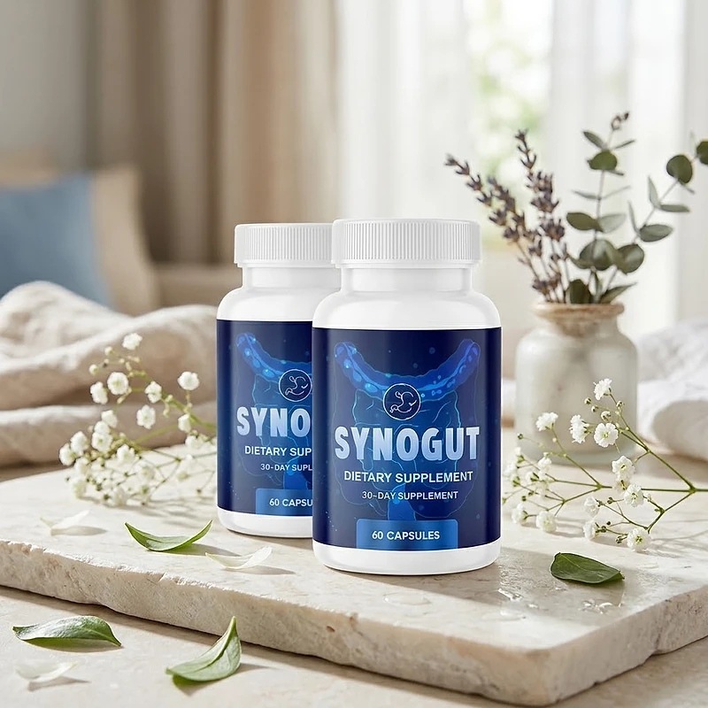
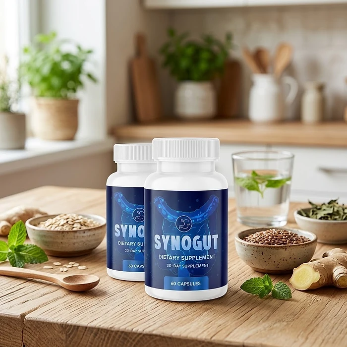

What Is SynoGut And How Does It Work?
SynoGut is a dietary supplement in capsule form designed to support healthy digestion, regularity, and a balanced gut for adults who want to address the sluggish digestion, bloating, and heaviness that can build up with age, low-fiber meals, and busy routines through a natural, dependable approach — without restrictive diets or temporary quick fixes.
It utilizes a simple daily serving of two capsules that combines Psyllium Husk, Bentonite Clay, Black Walnut Hull, Oat Bran, Flaxseed, Prune, Aloe Vera, L. Acidophilus, Apple Pectin, and Glucomannan to support smooth gastric transit, intestinal cleansing, and a healthy gut flora, helping the body maintain its natural balance throughout the day.
The ingredients in SynoGut are fibers, plant powders, a mineral clay, and a probiotic strain that, according to the official website, are mixed in precise amounts to keep their properties intact, a combination of fiber and probiotic that the website calls synbiotic, particularly for adults who prefer one simple routine over multiple products or complicated plans.
Rather than acting as a short-lived artificial fix, SynoGut focuses on a fiber-first approach, working gradually alongside daily routines to help maintain comfortable digestion, regularity, and long-term wellness.
With consistent daily use, a formula of this kind is intended to help with a lighter feeling after meals, more regular bowel movements, and a gradual sense of digestive comfort, especially when combined with plenty of water, a balanced diet, good sleep, and regular exercise.
From a practical standpoint, SynoGut is a daily digestive support capsule designed to support wellness from within — helping you feel lighter, stay energized, and remain in control of your health.
Made in the USA in a facility the official website describes as FDA-accredited and GMP-certified, SynoGut is designed for regular daily use, with non-GMO capsules that contain no stimulants and are not habit forming, focusing on safety, purity, and quality for those seeking a natural, non-prescription route to digestive wellness.
SynoGut Ingredients
Every two-capsule serving of SynoGut contains a 1.5 g proprietary blend of the ten ingredients below, listed on the Supplement Facts panel and chosen to support regularity, intestinal cleansing, and a balanced gut flora as part of a consistent daily routine:
Psyllium (Husk): A soluble fiber that absorbs water and supports soft, regular bowel movements.
Bentonite Clay: A natural mineral clay that the official website includes to support intestinal cleansing.
Black Walnut (Hull): A traditional botanical used to support a clean, balanced digestive tract.
Oat (Bran): The fiber-rich outer layer of the oat grain, which adds bulk and supports digestive comfort.
Flaxseed (Seed): A seed rich in fiber and plant compounds that supports smooth gastric transit.
Prune (Fruit): A classic fruit for natural regularity, providing fiber and sorbitol.
Aloe Vera (Leaf): A plant traditionally used to soothe the digestive tract and support beneficial bacteria.
L. Acidophilus, Apple Pectin, and Glucomannan (Root): A probiotic strain plus two prebiotic fibers that feed the good bacteria and support a healthy gut flora.
Together, these ingredients work synergistically to support digestive comfort, regularity, and gut flora balance from within. The label does not list individual amounts within the blend. The other ingredients are gelatin (capsule), magnesium stearate, and silicon dioxide, and the label carries an allergen warning: the formula contains tree nuts (black walnut).
SynoGut is designed for daily use, offering a natural, non-prescription approach to supporting digestive wellness, without stimulants or complicated routines.
SynoGut Side Effects
SynoGut is generally considered well tolerated and is designed for adults of different ages and lifestyles who are looking for a safe, natural, and balanced approach to digestive wellness, especially those who prefer an easy two-capsule daily routine to support digestion, comfort, and regularity without resorting to risky solutions with severe side effects.
The official website describes the formula as natural, non-GMO, free of dangerous stimulants, and not habit forming, with the purity of the ingredients verified by a third party, and SynoGut is made in the USA under sterile, strict standards, according to the official website, reinforcing consistency, safety, and reliability.
With no widespread reports of serious side effects, SynoGut is generally considered a well-tolerated option. A few points deserve attention: the label warns that the formula contains tree nuts (black walnut) and that it is made in a facility that also processes other common allergens; and because it is rich in fiber, some people may notice mild, temporary gas or bloating in the first days, which is why it should be taken with plenty of water. Persistent abdominal pain, blood in the stool, or a lasting change in bowel habits should be evaluated by a doctor. It is not intended to diagnose, treat, cure, or prevent any disease, and individual results may vary.
According to the label, pregnant or nursing mothers, children under the age of 18, individuals taking prescription medication, and anyone with a known medical condition should consult a physician before using SynoGut. The official website adds that it is a good idea to show the bottle to your doctor first, ensuring it fits safely within your personal wellness plan.
SynoGut Dosage
The recommended SynoGut dosage is two capsules a day with a meal, and it is designed to fit easily into a daily routine, making consistency simple and convenient. Formulated as an easy daily capsule, it requires no powders to mix, no drinks to prepare, and nothing to measure.
The recommended approach, as printed on the label, is for adults to take two capsules daily with a meal. The official FAQ suggests taking SynoGut in the morning with a big glass of water, at the same time each day, which suits a fiber formula and allows its ingredients to work consistently.
For best results, consistency is key. Each bottle contains 60 capsules, a 30-day supply, and because digestive support builds gradually, the official FAQ notes that supplements of this kind usually take around 9 to 12 weeks to show results, so many people make it part of an ongoing wellness routine.
There is no need for complex schedules or multi-step routines. One simple daily serving is designed to build lasting support gradually alongside a balanced diet, enough water, and an active lifestyle. The label also advises storing the bottle in a cool, dry place and not using it if the safety seal is damaged or missing.
As with any dietary supplement, it's important not to exceed the recommended dose and to check the label on your bottle. SynoGut works best when used regularly, combined with proper hydration, balanced nutrition, and healthy daily habits.
SynoGut – Refund Policy
You can order SynoGut with confidence, knowing that every purchase is protected by a 60-day money-back guarantee counted from the day the package is delivered. This allows you to try the formula and decide if it delivers the support you expect.
According to the refund policy on the official website, customers who are not fully satisfied can request their money back within 60 days of delivery. The policy recommends using the product for at least 3 months before deciding, and asks customers to send back all the bottles, whether they are empty, opened, or sealed, together with the packing slip. The return shipping cost is paid by the customer.
How the refund process works: If you decide SynoGut is not right for you, email customer support with "Refund Request" in the subject line, then send all the bottles to the return address given in the policy, in Aurora, Colorado, with a note containing your full name, email, and order number. Once the package is received, your refund is processed, and you receive an email confirming it.
Customer Support Contact Information: contact@synogut.com, as listed on the official website, or +1 (720) 780-6912, seven days a week from 10 AM to 1 AM EST. Order questions can also be sent to BuyGoods, the retailer.
Refund Processing Time: According to the policy, processing takes between 5 and 10 days, and the time for the amount to appear on your statement depends on your bank or card company.
This refund policy is designed to give customers a clear and transparent experience when trying SynoGut.
SynoGut – Where To Buy
SynoGut is sold through its official website, so if you decide to try it, it's important to be careful about where you purchase it. The official website is the only sales channel the manufacturer lists, and it does not point to marketplaces such as Amazon, eBay, or Walmart.
Listings on third-party platforms may look similar but cannot be verified as authentic, raising concerns about safety, quality, and freshness. Products purchased outside the official source may not be covered by the 60-day money-back guarantee.
For this reason, it makes sense to purchase SynoGut only through the official website. Buying directly from the official source ensures you receive the authentic original product, made in the USA, with access to customer support and the full guarantee. According to the official website, every order is a one-time payment with no subscription or hidden charges, and orders are processed by BuyGoods, the retailer named on the site.
To avoid counterfeit batches and ensure maximum quality, always verify that you are ordering from the official SynoGut website before completing your purchase.
To ensure you’re getting the authentic product, most users choose to visit the official website.
Is SynoGut A Scam?
Based on what the official website and the product label disclose, SynoGut does not appear to be a scam. It is a real capsule supplement, sold through an established retailer, and formulated to support healthy digestion, regularity, and gut flora balance as part of a consistent routine.
The ingredients used in SynoGut — Psyllium Husk, Bentonite Clay, Black Walnut Hull, Oat Bran, Flaxseed, Prune, Aloe Vera, L. Acidophilus, Apple Pectin, and Glucomannan — are known in the wellness field, and the label publishes a full Supplement Facts panel, with the total amount of the blend, and the official website lists scientific references about the ingredients for transparency.
In addition to its formula, SynoGut is made in the USA in a facility the official website describes as FDA-accredited and GMP-certified, and the label identifies the distributor, in Englewood, Colorado, and declares the tree nut allergen, with a focus on safety, purity, and consistency.
The official website publishes no written customer testimonials, so this review does not quote any. A fair point of criticism is that the website's FAQ uses some alarming language about digestion and says the formula suits all ages, while the label is more careful and says it is not intended for anyone under 18, so the label is the reference to trust. Results vary from person to person, and no supplement replaces medical care for persistent digestive problems.
SynoGut is backed by a 60-day money-back guarantee, and orders are one-time payments with no subscription. The refund steps, including sending back all bottles and paying the return shipping, are published on the official website, which gives customers a clear path if the product does not meet their expectations.
If you're looking for a simple daily capsule to support digestion, regularity, and well-being without complicated routines, SynoGut is worth considering — especially when purchased directly from the official website.
For those who want to verify product details or check current availability, the official SynoGut website remains the safest option.
